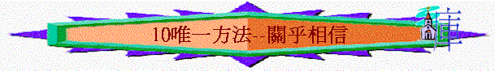

經文：羅1:18-2:3；2:17-24；3:19-28
引言:你認為人需不需要信耶穌？ 不信耶穌可不可以？ 為什麼？
or
活動:在卓子上預備一杯茶、咖啡、清水、橙汁，邀請組員享用(他們有權可以不飲)；問他們為何飲／不飲？為何飲此飲品？(可能有人說沒需要飲就不飲/想飲茶因為有需要「提神」)
你認為人又需不需要信耶穌？
一.人的需要（1:18-32）
1.V18聖經怎樣形容世人？
2.何謂「不虔」？ 人會否對另一個人不虔？ 若不虔是指人對神不好的態度，試從三段聖經指出世人對神的幾種不虔態度（1:19-23； 1:28；1:32）
3.有沒有試過見過一些人對神很不虔，他們有什麼表現？ 你有否試過？ 試分享
4.何謂「不義」？ 他們有什麼表現，你也認為不好、不合理？（Ｖ26-32），在Ｖ26-32列 出很多不義的心態及行為，那一樣你最接受不到？ 那一樣是人最常犯的? 那一樣自己也犯過？
5.保羅在3:19-20有什麼總結？ 既然每個人都不能靠律法／行為可以稱義、可以離審判，人可以靠什麼得救呢？得稱義呢？
二.神的方法(3:21-28)
1.人不能靠自己行為、律法顯出、達到神的義，ｖ21-22宣告一個什麼的方法可得義？
這個方法有什麼特別之處？ 令人驚訝、讚嘆的地方？（ｖ22-25）
2.試想想，不用這個方法，世人能不能達到神的義，為什麼？（ｖ23）
3.何謂信？（可1:15,羅10:9) 你有沒有曾經想信耶穌？ 分享你在幾時、那個場合想？ 當時為什麼想相信耶穌？
4.人相信後，帶來什麼結果？（ｖ26）你有沒有勇氣說自己是一個「義人」為什麼？
5.但信了後，我們在態度上有什麼值得注意及留心？為什麼？（ｖ27）